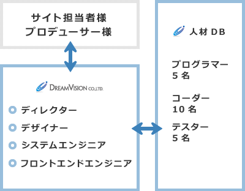

人材会社が母体ですので、様々な分野のクリエイターが在籍しております。
クライアントの問題解決をするとともに、確かな技術でWeb制作をバックアップします。
デザインは決まっている！
コーディングとシステム開発はどうしようか・・・そんな時はご相談ください。
弊社の開発チームがバックアップします。
大規模なWebサイト・システム開発案件にも対応。
外部のプログラマー・コーダーをアサインすることで大規模案件にも対応した
チームを構成することも可能です。
実績として400サイトのシステム移行
